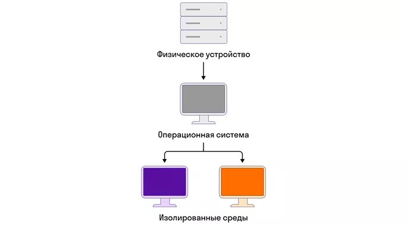

Разработчики в рамках практики CI/CD используют технологии контейнеризации и виртуализации, чтобы изолировать тестовые среды и упростить развертывание тестовых инфраструктур.
Виртуализация — создание изолированных сред на одном физическом устройстве.
Контейнер — это виртуальная машина, в которой нет своей операционной системы.
Контейнеризация — это легковесный подход к виртуализации, позволяющий упаковать приложение и его зависимости в контейнер. Контейнеры обеспечивают консистентность работы приложения в различных средах.
Docker — это открытая платформа для разработку, доставки и выполнения приложений в контейнерах.
Docker использует технологию контейнеризации для ускорения разработки, облегчения развертывания и управления приложениями.
Docker работает по принципу морских грузоперевозок. Представим грузовой корабль с большим количеством одинаковых контейнеров на борту. В каждом таком контейнере — разные типы грузов. Нам не нужно думать о том, как распределять разные типы грузов, но все контейнеры одинаковые. Грузить и разгружать такие контейнеры быстро и эффективно.